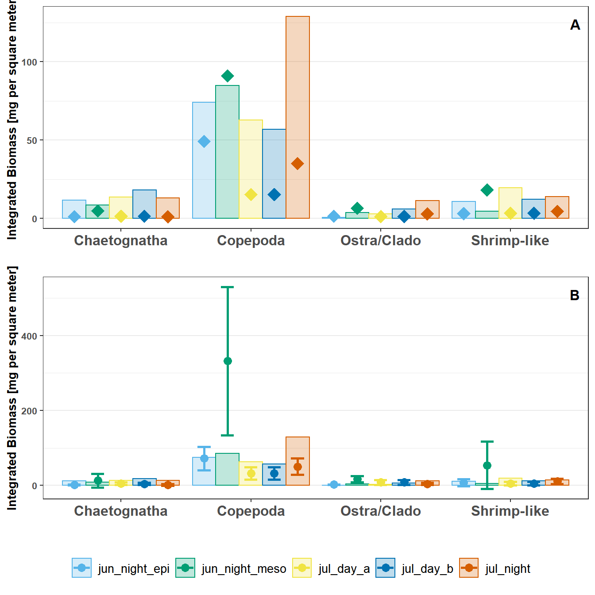

Code
rm(list = ls())
library(ggplot2)
library(cowplot)
test_res <- readRDS('../Output/data_08_intg_test-res.rds')
intg_plots <- readRDS('../Output/main_fig_08_biomass_integration-plots.rds')plot_themes <- theme(axis.title.y = element_text(size = 10, face = 'bold'),
axis.text.x = element_text(size = 12, face = 'bold'),
axis.text.y = element_text(size = 8),
legend.position = 'none')
plot_grid(intg_plots$pooled + plot_themes,
intg_plots$avged + plot_themes,
get_legend((intg_plots$avged + theme(legend.position = 'bottom',
legend.text = element_text(size = 10)))),
rel_heights = c(1,1,.2),
labels = c("A","B",""),
label_x = .95,
label_y = .95,
label_size = 12,
ncol= 1)
In general, the UVP estimates are lower than the MOCNESS estimates. However, there were no significant differences in pair-wise comparisons for any taxa between Pooled-cast UVP to MOCNESS estimates, Average-cast UVP to MOCNESS estimates, nor Pooled-cast to average-cast UVP estimates.
pool_to_moc <- sapply(test_res$pool_moc, `[[`, 'p.value')
avg_to_moc <- sapply(test_res$avg_moc, `[[`,'p.value')
avg_to_pool <- sapply(test_res$avg_pool, `[[`, 'p.value')
stat_res <- as.data.frame(rbind(pool_to_moc,avg_to_moc,avg_to_pool))
DT::datatable(stat_res, caption = 'p-values from pairwise Mann-Whitney test to compare depth-integrated abundance between Pooled UVP, Averaged UVP, and MOCNESS collected taxa')---
title: "Depth Integrated Biomass"
---
```{r Set up, message=FALSE, warning=F}
rm(list = ls())
library(ggplot2)
library(cowplot)
test_res <- readRDS('../Output/data_08_intg_test-res.rds')
intg_plots <- readRDS('../Output/main_fig_08_biomass_integration-plots.rds')
```
```{r Plots, message=F, fig.height=7, fig.cap='Depth integrated biomass for taxa cacluled from MOCNESS (displayed as bars) and UVP (displayed as points). (A). Pooled-cast method for UVP estimates. (B): Average-cast method for UVP estimates with standard deviation shown. There are no significant differences on pair-wise comparisons for casts within taxa between UVP-to-MOCNESS or Pooled-cast to average-cast UVP estimates. (Mann-Whitney Test).'}
#| Column: body-outset
plot_themes <- theme(axis.title.y = element_text(size = 10, face = 'bold'),
axis.text.x = element_text(size = 12, face = 'bold'),
axis.text.y = element_text(size = 8),
legend.position = 'none')
plot_grid(intg_plots$pooled + plot_themes,
intg_plots$avged + plot_themes,
get_legend((intg_plots$avged + theme(legend.position = 'bottom',
legend.text = element_text(size = 10)))),
rel_heights = c(1,1,.2),
labels = c("A","B",""),
label_x = .95,
label_y = .95,
label_size = 12,
ncol= 1)
```
In general, the UVP estimates are lower than the MOCNESS estimates. However, there were no significant differences in pair-wise comparisons for any taxa between Pooled-cast UVP to MOCNESS estimates, Average-cast UVP to MOCNESS estimates, nor Pooled-cast to average-cast UVP estimates.
```{r Stats Summary}
pool_to_moc <- sapply(test_res$pool_moc, `[[`, 'p.value')
avg_to_moc <- sapply(test_res$avg_moc, `[[`,'p.value')
avg_to_pool <- sapply(test_res$avg_pool, `[[`, 'p.value')
stat_res <- as.data.frame(rbind(pool_to_moc,avg_to_moc,avg_to_pool))
DT::datatable(stat_res, caption = 'p-values from pairwise Mann-Whitney test to compare depth-integrated abundance between Pooled UVP, Averaged UVP, and MOCNESS collected taxa')
```